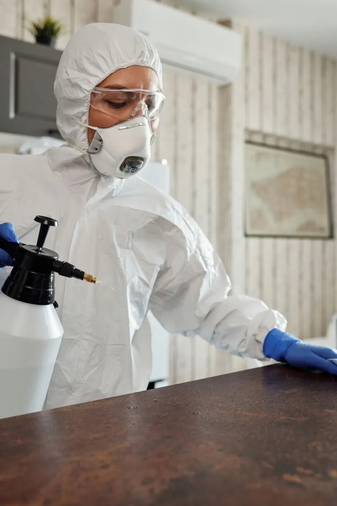

Дезинсекция
Полное уничтожение насекомых во всех труднодоступных местах, с барьерной защитой от повторного появления.
Заказать обработкуСанитарная служба · Казахстан · с 2016 года
Профессиональная дезинсекция, дератизация и дезинфекция по государственной лицензии. Избавим ваш дом или бизнес от насекомых, грызунов и бактерий, с гарантией результата.
Услуги
Каждый объект под нашей аркой защиты. Обрабатываем сертифицированными препаратами, работаем аккуратно и с гарантией.
Полное уничтожение насекомых во всех труднодоступных местах, с барьерной защитой от повторного появления.
Заказать обработкуИзбавим от крыс и мышей и закроем пути их проникновения: грызуны не вернутся.
Заказать обработкуУничтожаем бактерии, вирусы и грибок, восстанавливаем санитарно-гигиенический режим помещения.
Заказать обработкуНе маскируем, а нейтрализуем источник неприятного запаха на молекулярном уровне.
Заказать обработкуРегулярная защита не даёт вредителям появиться снова. Это дешевле и спокойнее, чем борьба с заражением.
Заказать обработкуОбъекты
От квартиры до производства: подберём регламент обработки под ваш тип помещения. B2C, B2B и B2G.
Школы, предприятия и другие объекты: реальные кадры работы нашей команды. Нажмите на видео, чтобы посмотреть со звуком.
География
Собственные офисы и бригады в каждом городе. Возможен выезд в близлежащие населённые пункты.
+ выезд в близлежащие города и посёлки, уточняйте по телефону
Почему мы

№ KZ30LAM00001599, ТОО «Служба дезинфекции KAZDEZ». Выдана Департаментом санитарно-эпидемиологического контроля г. Алматы, 14.04.2025. Работаем официально и несём ответственность за результат.
Нажмите на страницу, чтобы увеличитьИспользуем профессиональные сертифицированные средства и оборудование. Подбираем метод так, чтобы обработка была безопасной для людей и питомцев при соблюдении наших рекомендаций.
Даём гарантию на обработку. Если проблема вернулась в гарантийный срок, приедем и обработаем повторно. Наша цель: результат, а не разовый выезд.
Принимаем заявки и выезжаем в любое время: ночью, в праздники и выходные. Для кафе и бизнеса работаем в нерабочие часы, незаметно для ваших гостей.
Этапы
Осматриваем объект, определяем вид вредителя, степень заражения и источники проникновения.
Подбираем метод и препараты под ваш тип помещения, согласуем удобное время.
Проводим обработку сертифицированными средствами и профессиональным оборудованием.
Рассказываем, что делать после обработки, чтобы закрепить и сохранить результат.
Остаёмся на связи и контролируем эффект. Гарантия действует, вы под защитой.
Отзывы
Живые видео-отзывы наших клиентов. Включите звук и посмотрите: о результате они рассказывают сами.
FAQ
Дезинсекция: уничтожение насекомых (тараканы, клопы, муравьи, блохи и др.). Дератизация: борьба с грызунами, крысами и мышами. Дезинфекция: уничтожение бактерий, вирусов и грибка. Дезодорация устраняет неприятные запахи, а профилактическая обработка не даёт вредителям появиться снова.
Да. Мы часто проводим комплексную обработку: например, дезинсекцию вместе с дезинфекцией и дезодорацией за один выезд. Это эффективнее и выгоднее, чем заказывать по отдельности.
Мы не рекомендуем частичную обработку: насекомые мигрируют по всему помещению и быстро возвращаются из необработанных зон. Надёжный результат даёт только комплексная обработка всего объекта.
Основные источники: соседние квартиры, вентиляция, щели и стыки, подвалы и канализация. Также вредителей можно принести с продуктами, мебелью или вещами извне. При диагностике мы определяем источник и помогаем его перекрыть.
Да. Работаем с 2016 года по государственной лицензии. У нас есть юридические лица: ТОО «Служба дезинфекции KADDEZ» и ТОО «Asyl Group Services», мы заключаем договор, выдаём официальные документы и несём ответственность за результат.
Да, мы работаем 24/7: круглосуточно и без выходных. Для ресторанов, кафе и офисов проводим обработку в нерабочие часы, чтобы не мешать вашим клиентам.
Это регулярная обработка, которая предупреждает появление и повторное распространение вредителей. Особенно важна для кафе, ресторанов, складов и ЖК, где санитарный режим является требованием закона.
Отзывы о нашей работе: в 2ГИС, а также в наших Instagram и TikTok. Будем рады и вашему отзыву после обработки.
Заявка
Контакты